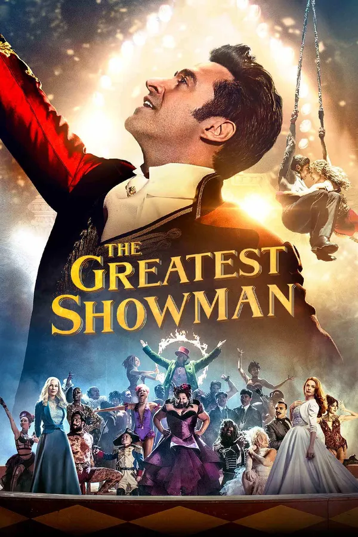
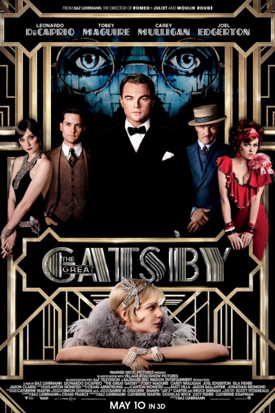
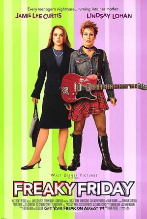
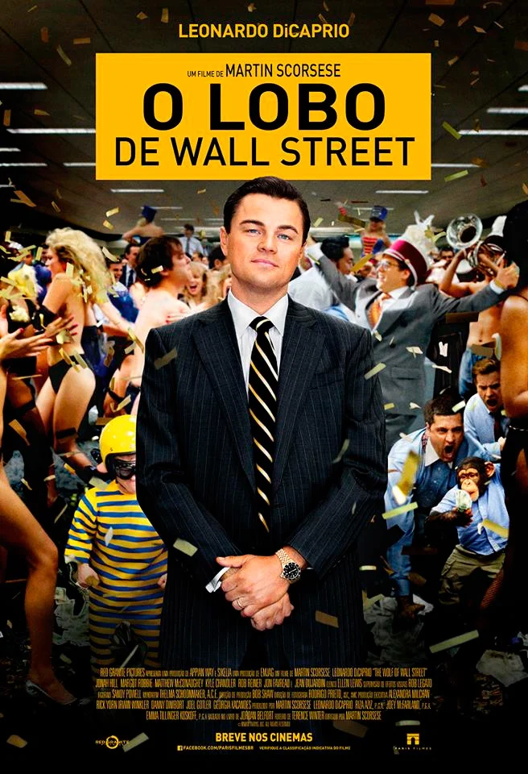
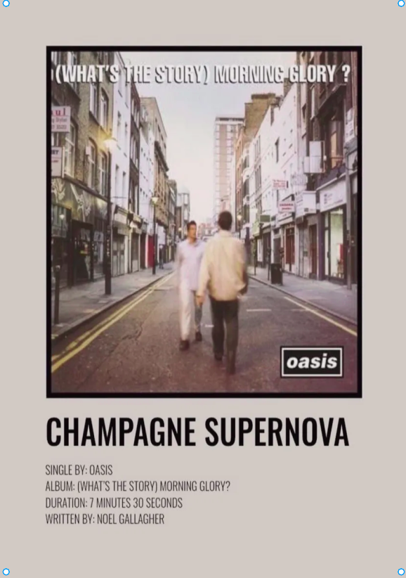
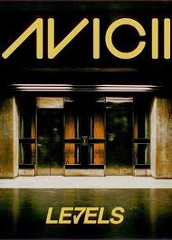
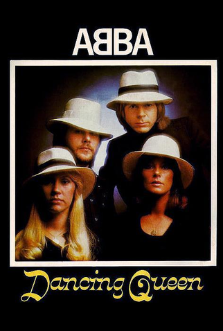
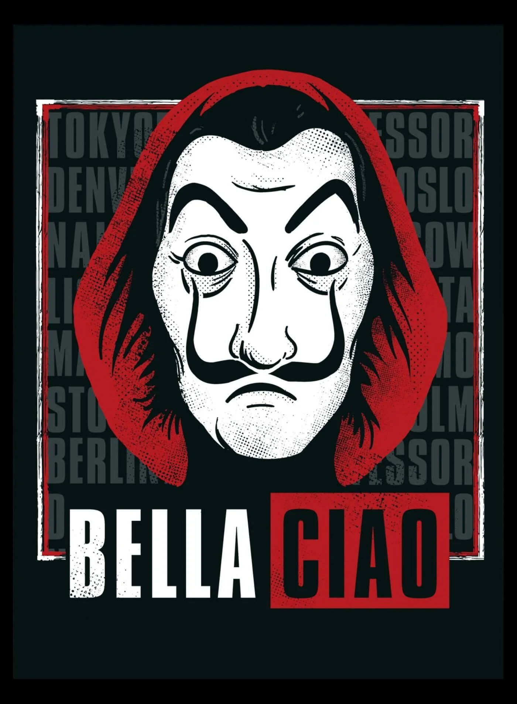
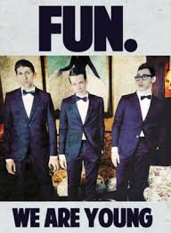

INDICAÇÕES
Dionísio é o exuberante e transformador deus das artes. Celebre a arte de forma pura e intensa, conferindo suas indicações de FILMES e MÚSICAS.
TOP 5 - Filmes
|  | O Rei do Show Este musical é um verdadeiro espetáculo de celebração da diversidade, criatividade e, acima de tudo, a capacidade de sonhar grande e transformar a realidade. |
|  | O Grande Gatsby O glamour, o excesso, a dualidade entre o sonho e a desilusão e a decadência que permeiam "O Grande Gatsby" são temas profundamente dionisíacos. As festas luxuosas e opulentas de Gatsby ecoam as celebrações e rituais dionisíacos, onde o vinho, a dança e a música são protagonistas. |
 |
Moulin Rouge Este filme é uma celebração da música, da dança, do amor e do drama, tudo envolto em uma atmosfera boêmia e vibrante, características que ecoam o espírito de Dionísio. A combinação de excesso, paixão e uma estética grandiosa, com uma história de amor trágico no coração de Paris, é exatamente o tipo de narrativa arrebatadora que o deus do êxtase e da emoção intensa adoraria. |
|  | Sexta-Feira Muito Louca A troca de corpos entre mãe e filha em "Sexta-Feira Muito Louca" representa transformação, um dos conceitos centrais para Dionísio. Ele é o deus da metamorfose, e a troca de identidades no filme é uma forma divertida de explorar o caos e a mudança. |
|  | O Lobo de Wall Street "O Lobo de Wall Street" é uma celebração do hedonismo e do excesso, que ecoa a essência de alegria e liberdade de Dionísio. A trajetória tumultuada de Jordan Belfort, marcada por ascensão e queda, reflete a natureza caótica da vida que o deus abraça, onde a busca desenfreada por prazer pode levar a resultados imprevisíveis. |
TOP 5 - MÚSICAS
|  | Champagne Supernova - Oasis Trecho: “How many special people change? How many lives are living strange?” Interpretação: Reflete a nostalgia e a efemeridade das experiências de vida, convidando à reflexão sobre aproveitar momentos especiais. |
|  | Levels - Avicii Trecho: “We could be together, we could be together.” Interpretação: A música transmite uma energia vibrante, convidando todos a se unirem na celebração e na dança. |
|  | Dancing Queen - ABBA Trecho: “You can dance, you can jive, having the time of your life.” Interpretação: Captura a essência da dança e da alegria, celebrando a vivacidade e a liberdade de ser jovem e se divertir. |
|  | Bella Ciao - Tradicional
italiana' Trecho: “E se eu morrer, oh bela ciao, bela ciao, bela ciao, ciao, ciao.” Interpretação: Expressa um espírito de resistência e luta pela liberdade, ressoando com a união e o coletivo. |
|  | We Are Young" - fun. ft. Janelle
Monáe Trecho: “Tonight, we are young, so let's set the world on fire, we can burn brighter than the sun.” Interpretação: Exalta a juventude e a busca por experiências inesquecíveis, celebrando a intensidade do momento. |